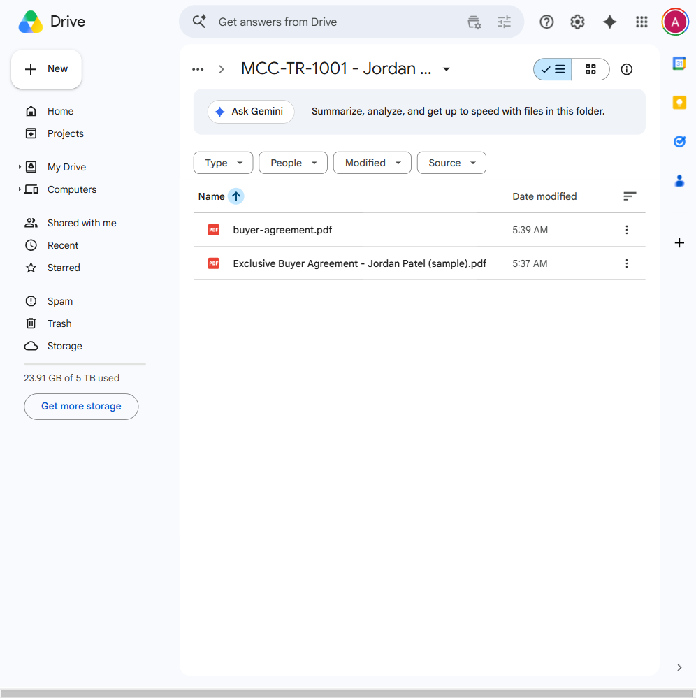

Above the fold
The room sees the output first.
Start with one real result, then explain how the workflow got there.
Claude roundtable brief
MCC Realtor Workflow
Realtor workflow brief
Claude reads the file, sets up the folder, stages the reminders, and drafts the follow-up. The realtor still reviews everything before it moves.

Above the fold
Start with one real result, then explain how the workflow got there.
Tammy opener
"A signed agreement comes in. Claude helps line up the admin work around it. The realtor still checks the file before anything goes out."
I
One example. Four steps.
Buyer or seller side. The file is in, the deal is real.
Claude pulls the details from the agreement and sets up the place the file will live.
Deadlines become reminders. The first follow-up email is drafted and waiting.
Nothing goes out until the realtor checks the checklist and confirms the file.
II
This is the part to show on screen.
Proof
The system is already preparing the right place for the file to live.
III
The usual questions are about control, fit, and what still stays human.
Human check
You are reviewing prepared work instead of rebuilding it from scratch.
Removes
The agreement becomes the starting point for the file, not another thing someone has to manually translate.
Keeps
The realtor still checks the deal, manages the relationship, and decides what gets used.
This is admin support around relationship work.
Short answer
You choose what gets shared, keep permissions tight, and keep review points in place for anything sensitive.
Close
The practical point is simple: the workflow moves faster, and the realtor still checks the file before anything goes out.
Open the live workflow demo